TÀI LIỆU HƯỚNG DẪN SỬ DỤNG SÁNG KIẾN THƯ VIỆN NĂM HỌC 2026 – 2027
Ứng dụng Nhật ký đọc sách
HƯỚNG DẪN DÀNH CHO CÁN BỘ THƯ VIỆN (TẬP 2)
Bổ sung dữ liệu sách (số trang, câu hỏi trò chuyện) Mã lớp và PIN đăng nhập cho học sinh
Nhật ký đọc sách của học sinh · Theo dõi lớp · Kế hoạch dùng thử
Địa chỉ ứng dụng: https://nhat-ky-doc-sach.vercel.app
Người biên soạn: Bùi Nguyên Phương Tháng 11 năm 2026
Mục lục
Mở đầu — Có gì mới so với tập 1, cần chuẩn bị gì
I. Đăng nhập của thầy cô
II. Bổ sung dữ liệu sách
1. Số trang và câu hỏi trong tệp Excel · 2. Sửa từng cuốn · 3. Gợi ý viết câu hỏi
III. Đưa học sinh vào ứng dụng
1. Nhập danh sách học sinh · 2. Tạo PIN và in phiếu · 3. Em quên PIN, bị khoá · 4. Đổi mã lớp
IV. Học sinh dùng ứng dụng (để cô hướng dẫn học sinh và phụ huynh)
1. Đăng nhập · 2. Trang chủ: cây đọc sách, đọc tiếp, góc bố mẹ · 3. Ghi nhật ký · 4. Đọc xong và thư gửi chính mình
· 5. Nhìn lại năm đọc sách · 6. Cài ứng dụng lên điện thoại
V. Theo dõi lớp và quyền riêng tư của học sinh
VI. Kế hoạch dùng thử (phiếu ghi kết quả)
VII. Khi gặp sự cố
Mở đầu
Tập 1 đã hướng dẫn nhập danh mục sách và mượn – trả. Tập 2 hướng dẫn phần chính của sáng kiến:
học sinh ghi nhật ký đọc sách ở nhà bằng điện thoại của bố mẹ, để hình thành thói quen đọc và thói quen ghi chép.
Những điểm mới:
Học sinh không cần nhớ mật khẩu. Em vào bằng mã lớp (6 ký tự, hoặc quét mã QR) → chọn tên → bấm PIN 4 số.
Thư viện / giáo viên chủ nhiệm in phiếu đăng nhập phát cho từng em.
Ghi nhật ký nhanh dưới 30 giây: kéo chọn trang → chọn cảm xúc → viết 1 câu.
Cây đọc sách: mỗi ngày em có ghi, cây lớn thêm; bỏ lỡ thì cây chỉ ngừng lớn, không héo.
Ứng dụng thưởng sự đều đặn, không thưởng theo số trang (tránh khai khống).
Gắn kết bố mẹ: "5 phút trò chuyện" có câu hỏi để bố mẹ hỏi con (câu riêng theo từng cuốn do thư viện nhập), bố mẹ viết thêm 1 dòng.
Riêng tư: thầy cô chỉ xem con số (số ngày ghi, số sách, cảm xúc). Chữ em viết chỉ hiện khi em bấm "Cho cô xem".
Cần chuẩn bị:
Tài khoản thủ thư (như tập 1). Máy tính để nhập dữ liệu, in phiếu; một điện thoại để thử vai học sinh.
Danh mục sách đã nhập (tập 1). Nếu được, bổ sung số trang và câu hỏi cho các cuốn hay được mượn.
Danh sách học sinh lớp thí điểm trên Excel (cột Họ và tên, Lớp).
I. Đăng nhập của thầy cô
Màn hình đăng nhập nay có 2 thẻ. Học sinh là thẻ mặc định (mã lớp + PIN). Thầy cô bấm thẻ Thầy cô
rồi gõ tên đăng nhập, mật khẩu như trước.
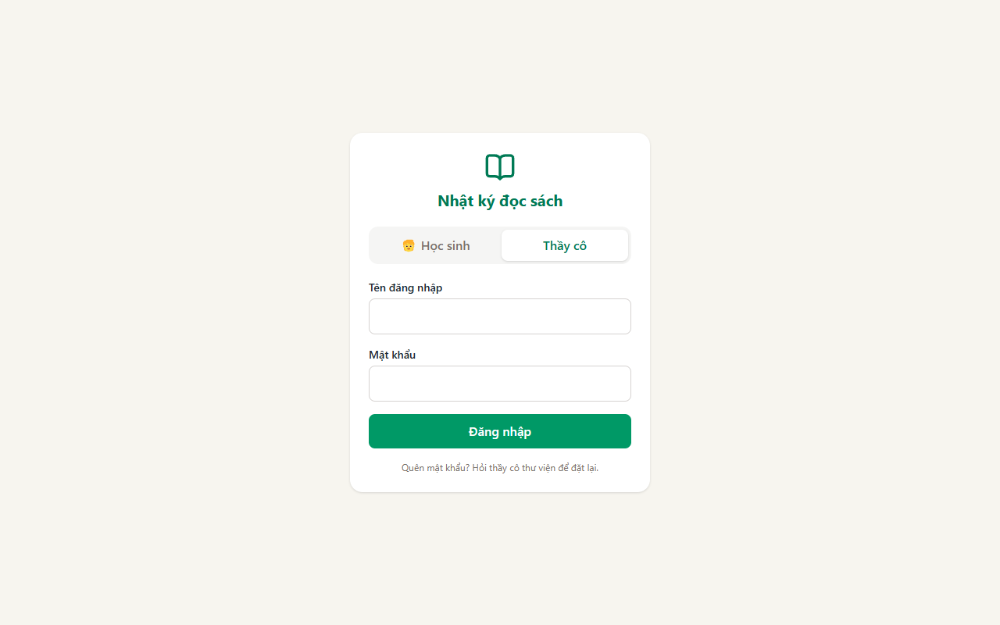
Hình 1. Thẻ "Thầy cô" ở màn hình đăng nhập
II. Bổ sung dữ liệu sách
Hai thông tin mới giúp học sinh ghi nhật ký nhanh và giúp bố mẹ trò chuyện với con:
Thông tin
Dùng để làm gì
Số trang
Học sinh kéo thanh trượt chọn "em đọc đến trang nào" (không phải gõ số). Ứng dụng nhớ trang lần trước
và hiện "Em đọc đến trang 85 / 144" ở trang chủ. Chưa nhập số trang thì thanh trượt tạm dài 200 trang.
Câu hỏi (trò chuyện theo sách)
Hiện trong mục "5 phút trò chuyện cùng bố mẹ" khi em ghi nhật ký về cuốn đó.
Mỗi lần hiện 2 câu riêng của sách (đổi theo ngày) và 1 câu chung. Không nhập thì ứng dụng dùng câu hỏi chung.
1. Số trang và câu hỏi trong tệp Excel
Vào Danh mục sách → Nhập danh mục Excel → Tải tệp mẫu (tệp mẫu đã có thêm 2 cột).
Với tệp đang dùng, chỉ cần thêm 2 cột có tiêu đề đúng như sau rồi nhập lại:
Cột Số trang: số nguyên, ví dụ 144.
Cột Câu hỏi: nhiều câu thì xuống dòng trong ô (bấm Alt + Enter)
hoặc cách nhau bằng dấu chấm phẩy ;
Lưu ý: nhập lại tệp không tạo sách trùng: sách cùng mã được cập nhật. Ô để trống giữ nguyên nội dung cũ,
nên có thể nhập riêng một tệp chỉ gồm Mã sách, Tên sách, Số trang, Câu hỏi cho những cuốn cần bổ sung.
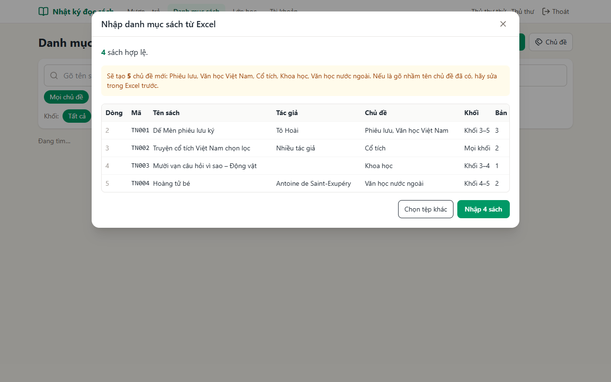
Hình 2. Bảng xem trước khi nhập tệp mẫu (4 sách hợp lệ)
2. Sửa từng cuốn
Mở cuốn sách → Sửa → điền ô Số trang và ô Câu hỏi trò chuyện theo sách (mỗi dòng 1 câu) → Lưu.
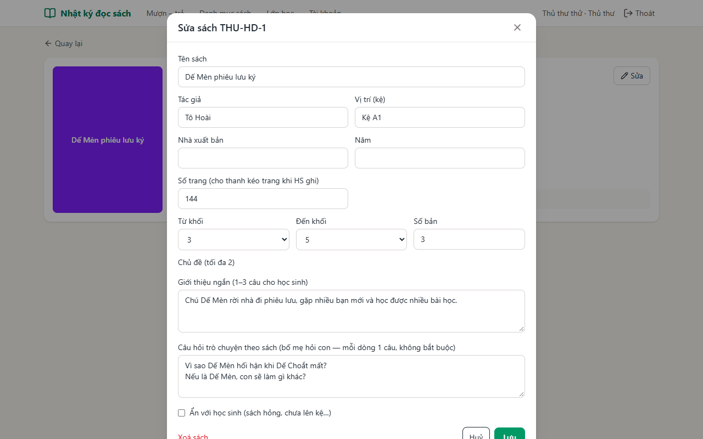
Hình 3. Ô Số trang và Câu hỏi trò chuyện trong màn hình sửa sách
3. Gợi ý viết câu hỏi
Câu ngắn, hỏi cảm nghĩ chứ không kiểm tra trí nhớ: "Vì sao Dế Mèn hối hận?", "Nếu là con, con sẽ làm gì?".
Mỗi cuốn 2–4 câu là đủ. Ưu tiên các cuốn được mượn nhiều, sách theo chủ đề của tháng.
III. Đưa học sinh vào ứng dụng
1. Nhập danh sách học sinh
Vào Tài khoản → Nhập học sinh từ Excel. Tệp cần cột Họ và tên (hoặc 2 cột Họ đệm + Tên)
và Lớp (ví dụ 4A). Lớp chưa có sẽ được tạo tự động. Mỗi em có một tài khoản; học sinh không cần dùng tên đăng nhập và mật khẩu
được tạo ra, vì em sẽ vào bằng mã lớp + PIN.
2. Tạo PIN và in phiếu đăng nhập
Vào Lớp học → chọn lớp ở ô góc phải → bấm 🔑 Mã lớp & PIN đăng nhập của học sinh (Hình 4).
Trang Mã lớp & PIN hiện mã lớp, mã QR và danh sách học sinh. Em chưa có PIN ghi "chưa có PIN" (Hình 5).
Bấm Tạo PIN cho … em. Mỗi em nhận một PIN 4 số ngẫu nhiên (Hình 6).
Bấm In phiếu → In phiếu. Mỗi em 1 phiếu có tên, lớp, mã lớp, PIN và mã QR (Hình 7). Cắt rời, phát cho từng em,
dặn em đưa bố mẹ cất giữ.
Quan trọng: PIN chỉ hiện đúng lúc vừa tạo. Máy chủ chỉ lưu dạng đã mã hoá nên không ai xem lại được PIN cũ,
kể cả thư viện. Hãy in phiếu ngay sau khi tạo. Rời trang mà chưa in thì phải bấm Đặt PIN mới cho em đó.
Hình 4. Trang Lớp học, nút "Mã lớp & PIN"
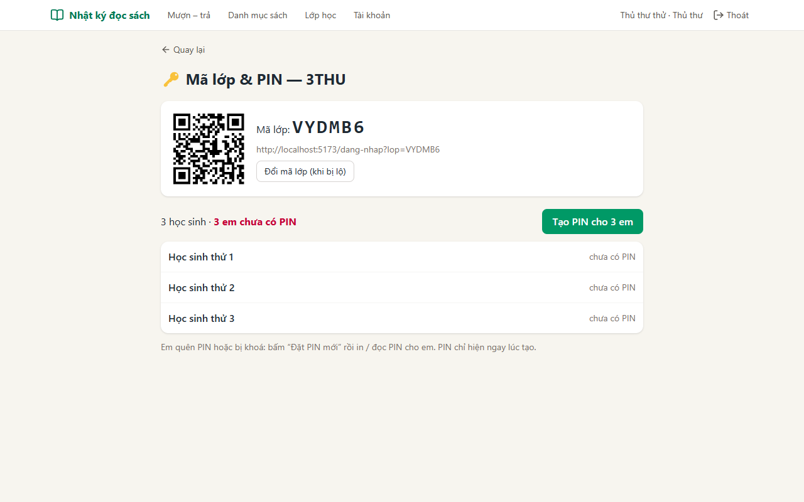
Hình 5. Mã lớp, mã QR, học sinh chưa có PIN
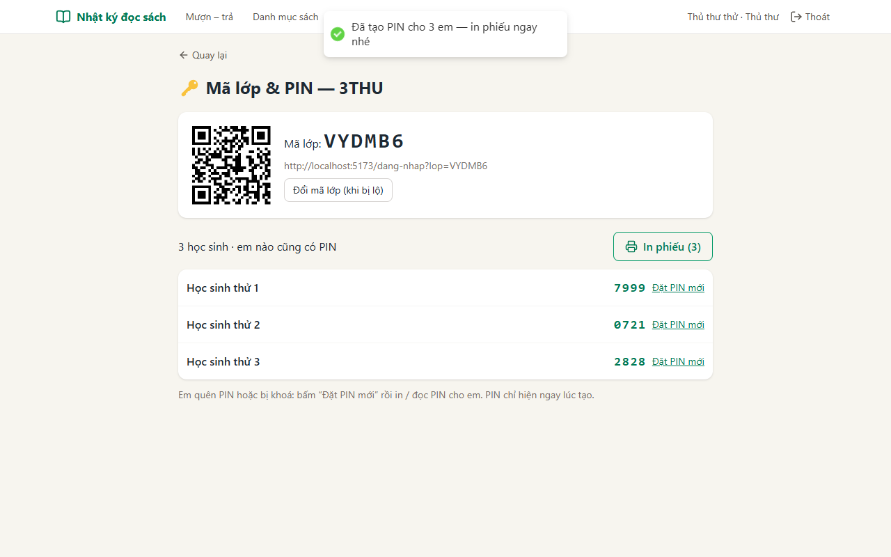
Hình 6. Vừa tạo PIN — PIN hiện màu xanh, nút "In phiếu"
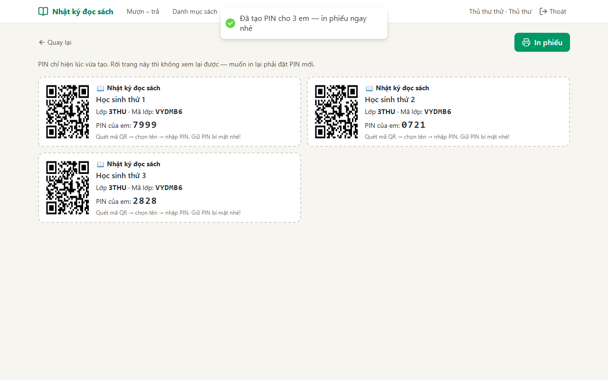
Hình 7. Phiếu đăng nhập của từng em (in ra giấy A4, cắt rời)
3. Em quên PIN hoặc bị khoá
Để chống đoán PIN, máy chủ tự khoá khi nhập sai nhiều lần:
Trường hợp
Ứng dụng làm gì
Sai 5 lần liền
Khoá em đó 15 phút (màn hình báo giờ được thử lại)
Sai 15 lần trong một ngày
Khoá em đó đến hết ngày
Cả lớp sai 60 lần trong một ngày
Tạm khoá đăng nhập PIN của cả lớp đến hết ngày (có thể mã lớp đã lộ → nên đổi mã lớp)
Em quên PIN hoặc bị khoá: vào trang Mã lớp & PIN → bấm Đặt PIN mới ở dòng của em → đọc hoặc in PIN mới cho em.
Đặt PIN mới cũng mở khoá ngay. Trong danh sách, em đang bị khoá có chữ đỏ "đang bị khoá".
4. Đổi mã lớp
Nếu mã lớp bị lộ ra ngoài (đăng lên mạng…), bấm Đổi mã lớp (khi bị lộ). Mã và QR cũ hết dùng được; PIN của các em giữ nguyên.
Cần in lại phiếu hoặc nhắn mã lớp mới cho phụ huynh.
IV. Học sinh dùng ứng dụng
Phần này để cô tự thử bằng tài khoản học sinh thử và hướng dẫn lại cho học sinh, phụ huynh (có thể chiếu trong buổi họp phụ huynh).
1. Đăng nhập
Quét mã QR trên phiếu bằng camera điện thoại (mở thẳng trang đăng nhập có sẵn mã lớp), hoặc vào địa chỉ ứng dụng rồi gõ mã lớp (Hình 8).
Chọn tên mình. Để bảo vệ học sinh, tên chỉ hiện dạng rút gọn, ví dụ "Nguyễn Thị Lan" hiện là Lan N.T. (Hình 9).
Bấm PIN 4 số trên bàn phím số to (Hình 10). Đủ 4 số là tự vào.
Lần sau mở ứng dụng, màn hình hỏi "Ai đang đọc sách?" và hiện sẵn các bạn đã vào trên máy đó. Anh chị em dùng chung điện thoại
thì mỗi em bấm tên mình rồi nhập PIN của mình (Hình 11). Máy chỉ nhớ tên rút gọn, không nhớ PIN, không lưu nhật ký.
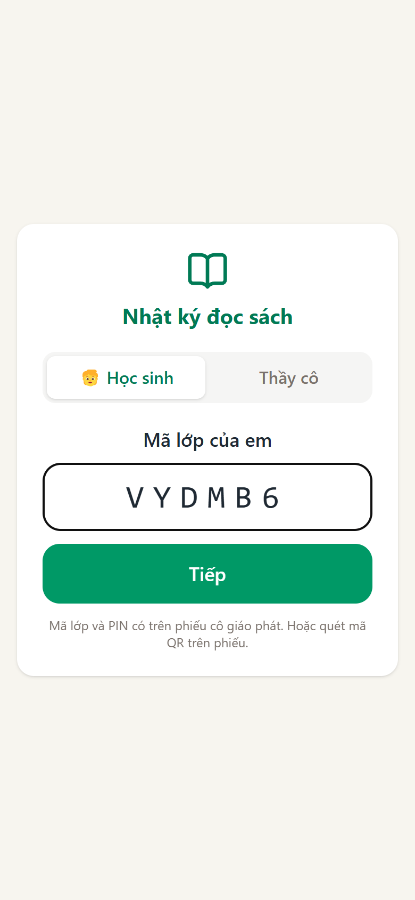
Hình 8. Gõ mã lớp
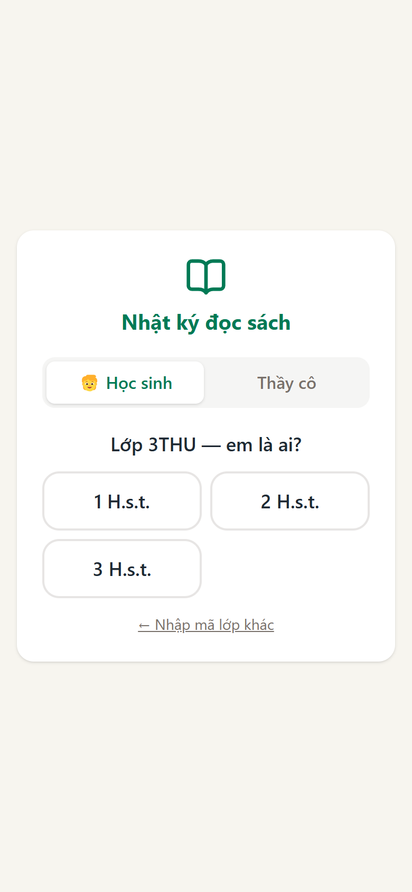
Hình 9. Chọn tên
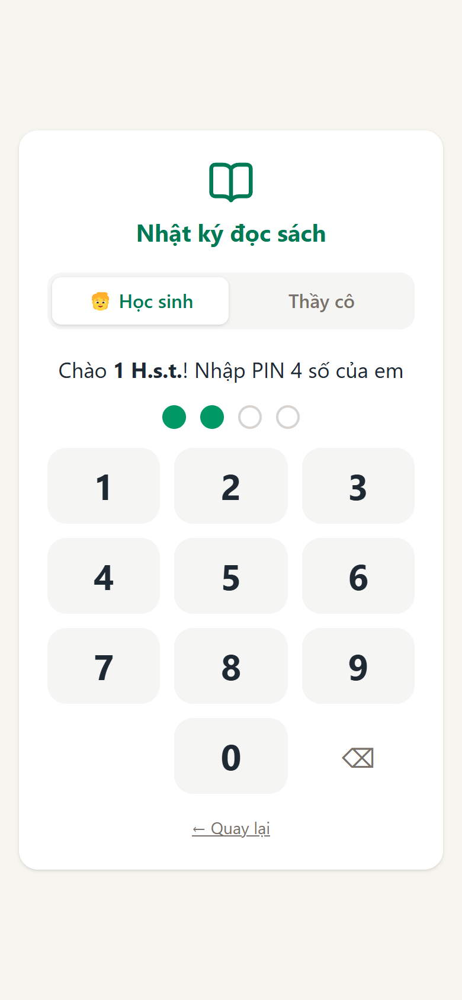
Hình 10. Bấm PIN
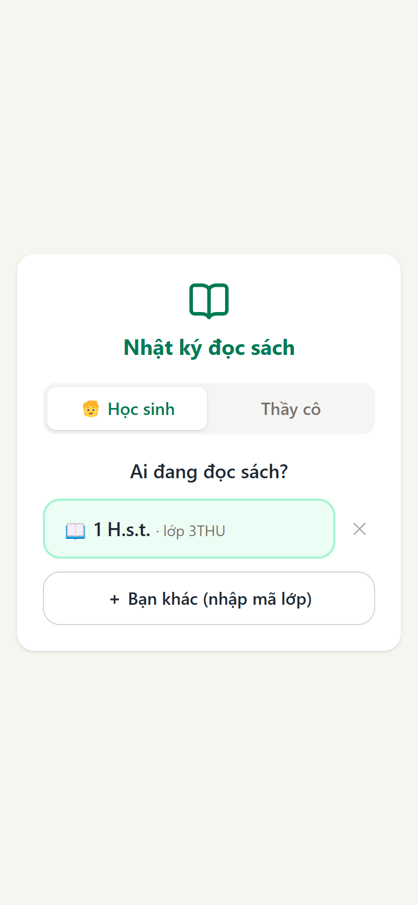
Hình 11. Lần sau: "Ai đang đọc sách?"
2. Trang chủ: cây đọc sách, đọc tiếp, góc bố mẹ
Nút to Ghi nhật ký ở trên cùng.
Cây của em: lớn theo số ngày có ghi nhật ký (mỗi ngày tính 1 lần): hạt mầm → mầm non → cây con → cây nhỏ → cây lớn
→ ra hoa (30 ngày) → ra quả (60 ngày) → khu vườn đọc sách (100 ngày). Có thanh tiến độ "còn … ngày nữa".
Bỏ lỡ ngày thì cây chỉ ngừng lớn, không héo.
Đọc tiếp: cuốn em đang đọc dở và trang đọc đến lần trước; bấm Ghi tiếp là ghi ngay.
Cuối trang: Góc bố mẹ, tổng kết tuần này (số ngày con ghi, cảm xúc nhiều nhất, số lần đọc cùng bố mẹ, cuốn đang đọc).
Được tính cho cây: lần ghi có ít nhất 1 câu ngắn (từ 3 chữ trở lên). Ghi nhiều lần trong ngày vẫn chỉ tính 1 ngày.
Mốc thưởng: 7, 30, 100 ngày ghi nhật ký và huy hiệu "Gia đình đọc sách" (5 lần ghi có bố mẹ cùng tham gia).
Máy chủ tự đếm, học sinh không tự cộng được.
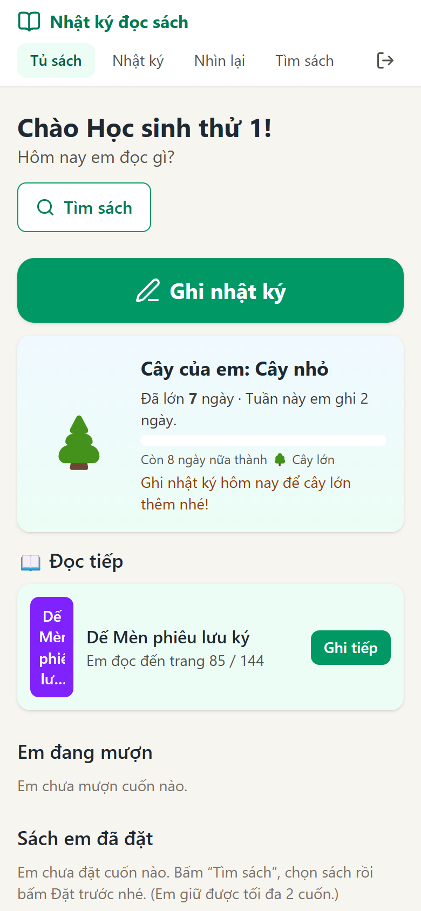
Hình 12. Trang chủ: cây, đọc tiếp
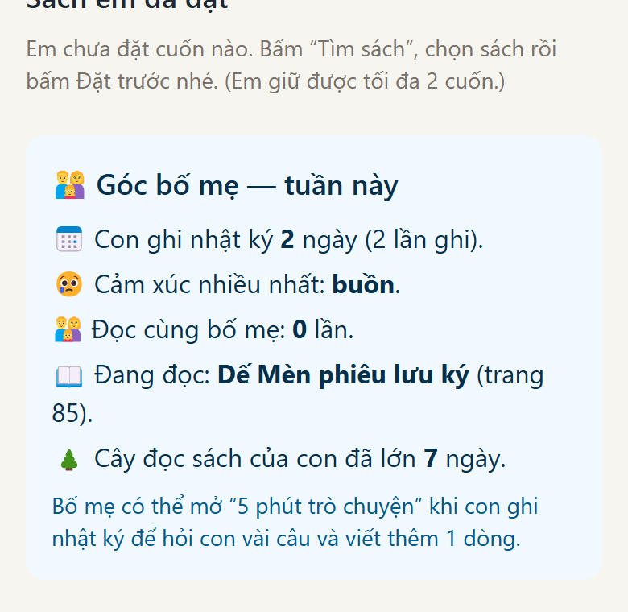
Hình 13. Góc bố mẹ (cuối trang)
3. Ghi nhật ký (dưới 30 giây)
Em đọc cuốn nào? Sách đang mượn hiện sẵn; cuốn khác thì gõ tên tìm trong thư viện.
Em đọc đến trang nào? Kéo thanh trượt hoặc bấm −/+. Ứng dụng đặt sẵn trang lần trước.
Em thấy thế nào? Chạm 1 trong 7 cảm xúc: vui, buồn, bất ngờ, hồi hộp, xúc động, suy nghĩ, buồn cười.
Viết 1 câu. Bí ý thì bấm 💡 Bí ý?: mỗi ngày một câu hỏi gợi ý khác. Muốn viết dài thì mở ＋ Em muốn viết thêm.
Không bắt buộc: mở 👨👩👧 5 phút trò chuyện cùng bố mẹ để bố mẹ hỏi con 3 câu (câu theo sách do thư viện nhập), đánh dấu
"đọc cùng bố mẹ", bố mẹ viết 1 dòng cho con.
Không bắt buộc: tích 👀 Cho cô xem lần ghi này nếu em muốn thầy cô đọc được.
Bấm Lưu nhật ký.
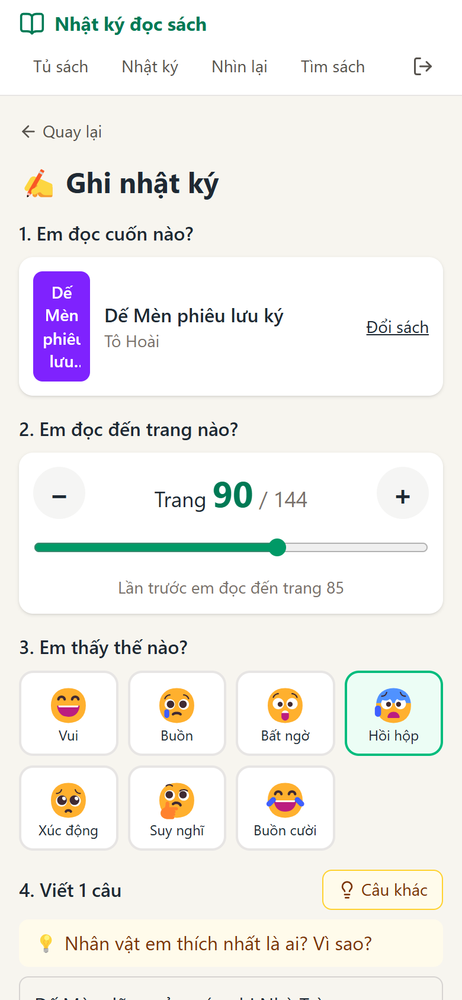
Hình 14. Ghi nhanh: trang, cảm xúc, 1 câu
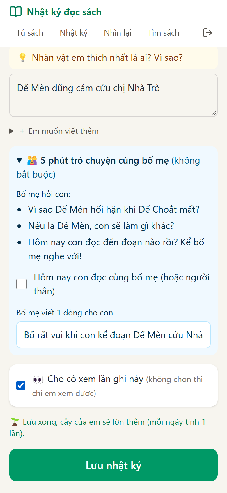
Hình 15. 5 phút trò chuyện, cho cô xem
Em sửa hoặc xoá được lần ghi trong 7 ngày (mục Nhật ký). Bật / tắt "Cho cô xem" thì lúc nào cũng được.
4. Đọc xong và "thư gửi chính mình"
Ở trang chủ, dưới cuốn đang mượn, bấm 🎉 Em đọc xong rồi (cần đã ghi ít nhất 1 lần nhật ký về cuốn đó).
Em chọn mức thích, viết cảm nhận (không bắt buộc) và có thể viết 💌 thư gửi chính mình: một lời nhắn cho em của 3 tháng sau.
Khoảng 90 ngày sau, trang chủ báo "Em có thư từ chính mình!" để em mở đọc. Thư và cảm nhận chỉ em xem được.
Sau đó ứng dụng gợi ý 3 cuốn đọc tiếp, em đặt trước được luôn.
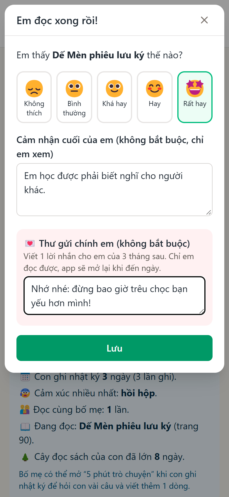
Hình 16. Đọc xong: mức thích, thư gửi chính mình
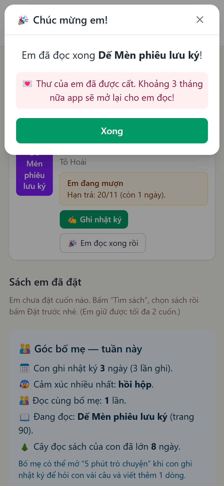
Hình 17. Chúc mừng em
5. Nhìn lại năm đọc sách
Mục Nhìn lại: số cuốn đọc xong, số ngày ghi nhật ký, cảm xúc nhiều nhất, biểu đồ theo tháng, kệ sách của em.
Bấm vào một cuốn để xem hành trình cảm xúc: dải biểu tượng cảm xúc đặt theo số trang, từ đầu đến cuối sách.
Có nút In sổ đọc sách để in làm kỷ niệm / minh chứng.
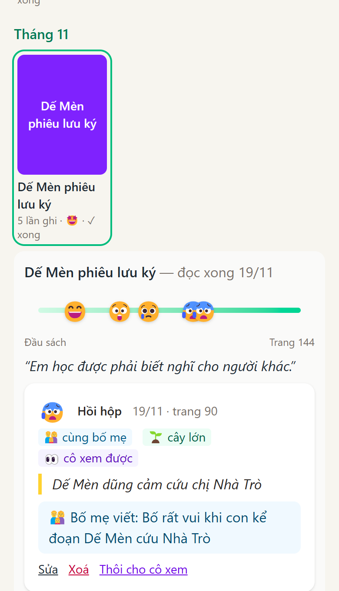
Hình 18. Kệ sách của em và hành trình cảm xúc của 1 cuốn
6. Cài ứng dụng lên điện thoại
Android (Chrome): mở ứng dụng → bấm ⋮ → Thêm vào màn hình chính (hoặc Cài đặt ứng dụng).
iPhone (Safari): mở ứng dụng → bấm nút Chia sẻ (ô vuông có mũi tên lên) → Thêm vào MH chính.
Biểu tượng cuốn sách xanh hiện trên màn hình, mở như một ứng dụng thật. Mọi dữ liệu nằm trên máy chủ: đổi điện thoại không mất nhật ký.
V. Theo dõi lớp và quyền riêng tư của học sinh
Thủ thư vào Lớp học, chọn lớp. Giáo viên chủ nhiệm đăng nhập thẻ Thầy cô sẽ vào thẳng Lớp của tôi (chỉ lớp mình).
Bảng chỉ có con số cho từng em: cây (số ngày ghi), tuần này mấy ngày, lần ghi gần nhất, số cuốn đọc xong trong năm học,
số lần em cho cô xem. Em 7 ngày trở lên chưa ghi được tô hồng để thầy cô nhắc nhẹ.
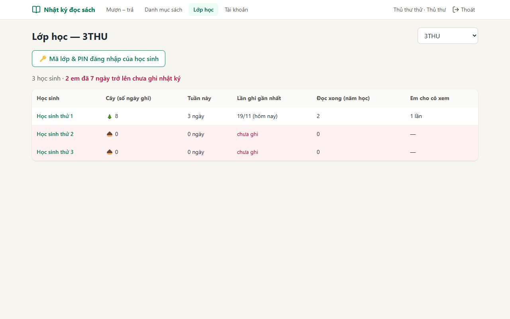
Hình 19. Lớp học: chỉ có con số
Bấm tên em để xem Nhìn lại của em đó (con số, cảm xúc, kệ sách) và những lần em cho cô xem.
Nội dung
Học sinh
GVCN lớp em
Thủ thư
Số ngày ghi, số sách, cảm xúc, cây, mốc
✓
✓
✓
Chữ em viết trong nhật ký
✓
chỉ những lần em bấm "Cho cô xem"
Cảm nhận khi đọc xong, thư gửi chính mình
✓
—
—
Nhật ký của học sinh lớp khác
—
—
chỉ con số
Vì sao làm vậy: trẻ biết cô đọc được thì sẽ viết cho cô xem, không viết thật lòng. Đây cũng là dữ liệu trẻ em nên
càng ít người đọc càng an toàn. Thầy cô vẫn đủ thông tin để nhắc em chưa ghi và để thống kê cho sáng kiến.
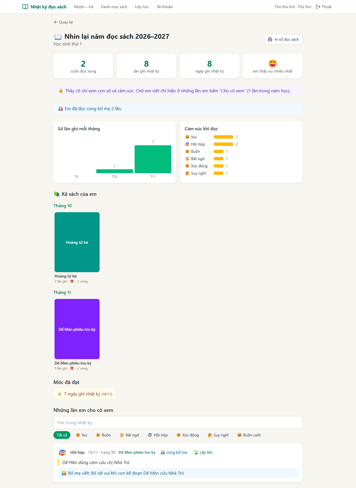
Hình 20. Xem 1 em: dòng nhắc quyền riêng tư
VI. Kế hoạch dùng thử (phiếu ghi kết quả)
Đề nghị cô dùng lớp thử 3THU (3 "Học sinh thử") để thử, cần 1 máy tính (thủ thư) và 1 điện thoại (học sinh).
Đánh dấu ✓ ở cột "Được" hoặc ghi rõ ở cột "Ghi chú" nếu thấy khó dùng, báo sai hay chậm.
TT
Việc cần thử
Kết quả đúng
Được
Ghi chú
1
Thêm cột Số trang, Câu hỏi vào tệp Excel cho 5–10 sách, nhập lại
Báo "cập nhật … sách"; mở sách thấy số trang, câu hỏi
2
Sửa 1 cuốn: thêm 2 câu hỏi
Lưu được
3
Lớp học → 3THU → Mã lớp & PIN → Tạo PIN → In phiếu
Có phiếu cho 3 em, có QR
4
Điện thoại: quét QR trên phiếu, chọn tên, nhập PIN
Vào trang chủ học sinh
5
Cố ý nhập sai PIN 5 lần
Báo phải chờ đến giờ …
6
Máy tính: Đặt PIN mới cho em đó; điện thoại nhập PIN mới
Học sinh không vào được bằng PIN: kiểm tra đúng mã lớp (mã không có số 0, chữ O, số 1, chữ I, chữ L). Vẫn không được → Đặt PIN mới.
Màn hình báo phải chờ: em đã nhập sai nhiều lần. Đặt PIN mới để mở khoá ngay.
Lần mở đầu tiên trong ngày hơi chậm (vài giây): máy chủ miễn phí "ngủ" khi không ai dùng. Bình thường.
Thấy sai hoặc lỗi: chụp màn hình, ghi lại vừa bấm gì, gửi cho thầy Phương (Zalo).
Dữ liệu dùng thử: nhật ký, lượt mượn và PIN của lớp thử 3THU có thể bị xoá khi thầy Phương chạy kiểm tra tự động.
Nếu PIN thử không vào được, cứ Đặt PIN mới. Danh mục sách thật được giữ lại dùng chính thức.